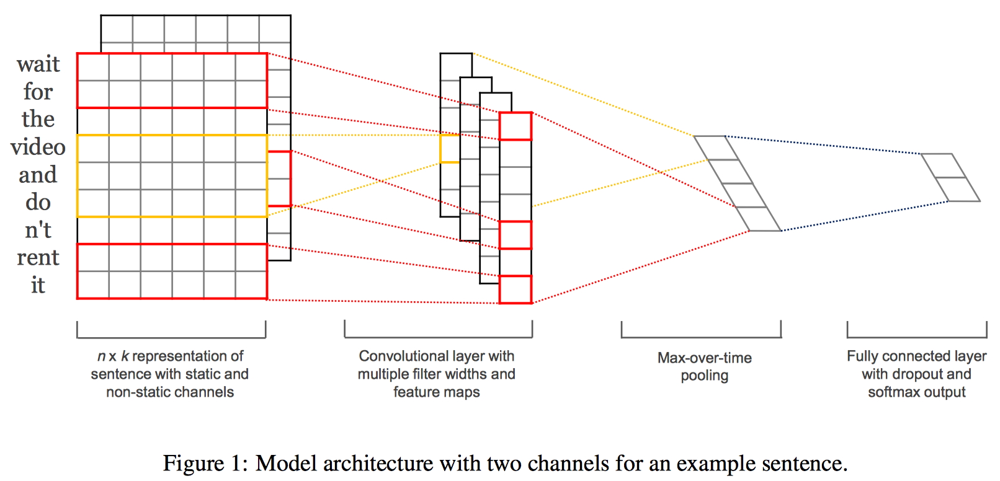

Short name: CNN for Sentence Classification
Score: 3
Problem addressed / Motivation
Text Classification assigns one or more classes to a document according to their content. It can provide conceptual views of document collections and has important applications in the real world.
Idea / Observation / Contribution
- Train a simple CNN with one layer of convolution on top of word vectors obtained from an unsupervised neural language model
- the pre-trained vectors are ‘universal’ feature extractors that can be utilized for various classification tasks
Formulation / Solver / Implementation

First, we use pre-trained word vector to embed words. Then we get features by
where $f$ is a non-linear function and $h$ is the size of filter window. So we can get a feature map
We can use different size of filters and get numbers of features maps. We then apply a max-overtime pooling operation (Collobert et al., 2011) over the feature map and take the maximum value $\hat{c} = \text{max}(\textbf{c})$ which can get important feature and avoid length-different problem.
Last is the fully connected layer with dropout and softmax output.
Useful info / tips
- When randomly initializing words not in word2vec, we obtained slight improvements by sampling each dimension from $U[-a,a]$ where a was chosen such that the randomly initialized vectors have the same variance as the pre-trained ones.
Evaluation
Dataset
- MR: Movie reviews with one sentence per review. Classification involves detecting positive/negative reviews (Pang and Lee, 2005)
- SST-1: Stanford Sentiment Treebank—an extension of MR but with train/dev/test splits provided and fine-grained labels (very positive, positive, neutral, negative, very negative), re-labeled by Socher et al. (2013)
- SST-2: Same as SST-1 but with neutral reviews removed and binary labels.
- Subj: Subjectivity dataset where the task is to classify a sentence as being subjective or objective (Pang and Lee, 2004)
- TREC: TREC question dataset—task involves classifying a question into 6 question types (whether the question is about person, location, numeric information, etc.) (Li and Roth, 2002)
- CR: Customer reviews of various products (cameras, MP3s etc.). Task is to predict positive/negative reviews (Hu and Liu, 2004)
- MPQA: Opinion polarity detection subtask of the MPQA dataset (Wiebe et al., 2005)
Metrics
- For all datasets we use: rectified linear units, filter windows (h) of 3, 4, 5 with 100 feature maps each, dropout rate (p) of 0.5, $l_2$ constraint(s) of 3, and mini-batch size of 50.
- Pre-trained Word Vectors: We use the publicly available word2vec vectors that were trained on 100 billion words from Google News.
- Words not present in the set of pre-trained words are initialized randomly
Results
- Even a simple model with static vectors (CNN-static) performs remarkably well, giving competitive results against the more sophisticated deep learning models that utilize complex pooling schemes (Kalchbrenner et al., 2014) or require parse trees to be computed beforehand (Socher et al., 2013).
- Fine-tuning the pre-trained vectors for each task gives still further improvements (CNN-non-static).
Resource
Source Code
There is the github repository of author.